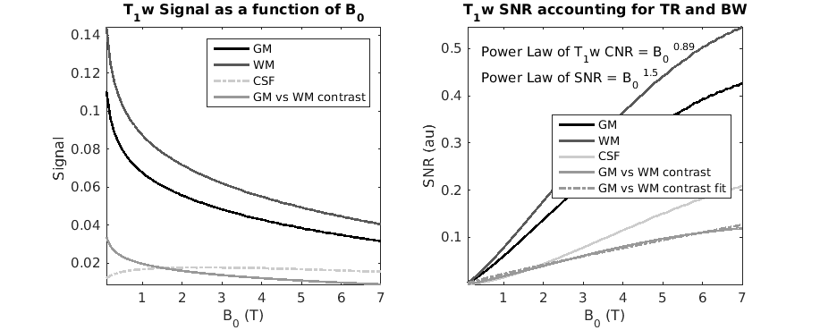
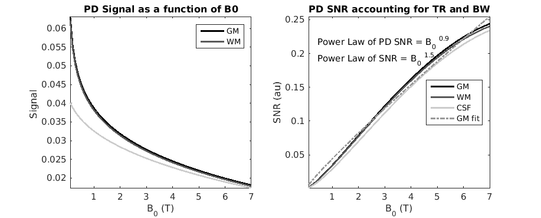
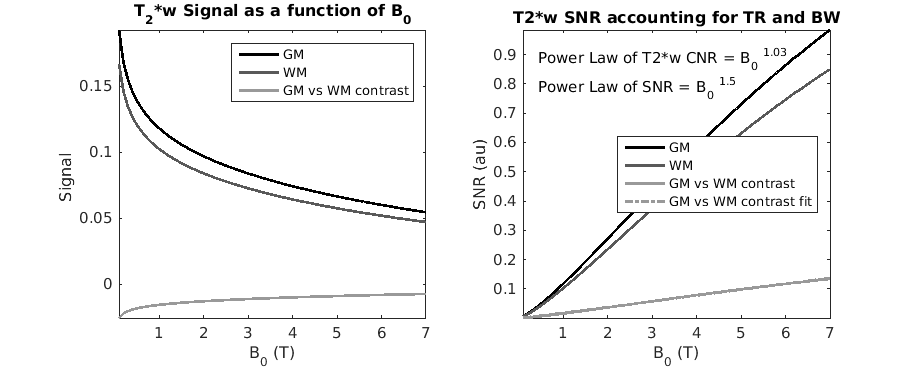
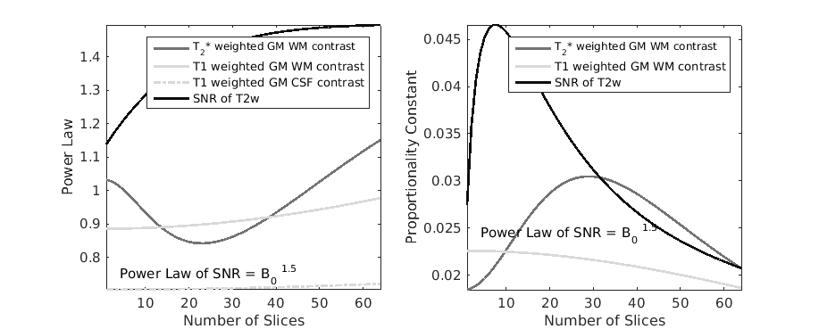

Read Me
cd to the directory where the function SNRandCNRfieldDependenceJMRI.m is located you can either run the whole code or simply use the html file to navigate through the results
Contents
initializing path and variables
close all clear all CurrDirectory = pwd ; addpath(genpath(CurrDirectory)) ; gamma = 42.577e6 ; % gyromagnetic constant in Hz SNR_PowerLaw = 1.5 ; % at High Fields this has been measured at 1.68, at lower fields it is expected to tend towards 1 because noise in the sample B0 = [0.1:0.1:7] ; % range of fields of simulations %(time needed to crush magnetization, apply slice selective and phase encoding gradients) DeadTime = 3e-3 ; % assumption of dead time within a GRE PDT1approach = 'ShortEnoughTE' ; % options are 'ShortEnoughTE' or 'minTR' minTR = 7e-3 ; % minimum repetition time achievable (used in PD and T1w in case of minTR) TEfractionOfT2 = 1 / 8 ; % fraction of shorter T2 at which we assume that no T2* contrast exists (used for PD and T1w) PDflip_Ernstfract = 0.25 ; % fraction of the Ernst flip angle used for PD TE_SpinEcho = 70e-3; % used on the 2D example PlotIntermediate = 0 ;
initializing relaxation times field dependence
Longitudinal and transverse relaxation rates using the models presented in: - Rooney et al MRM 2007; - Pohmann et al MRM 2016;
% R1 as a function of magnetic field according to % Rooney et al, MRM, 2007 % and using a model suggested by Bottemley et al, Med Phys, 1984 T1_WM = 0.00071 * (gamma*B0).^0.382; T1_GM = 0.00116 * (gamma*B0).^0.376; T1_BL = 0.00335 * (gamma*B0).^0.340; T1_CSF =1/0.231 * ones(size(B0)); % using Pohmann et al, MRM, 2016 T2s_GM = 0.090 * exp(-0.142 *B0); T2s_WM = 0.064 * exp(-0.132 *B0); T2s_CSF = 0.1*ones(size(B0)); % made up.. but not too relevant SNR_B0 = B0.^SNR_PowerLaw ;
relaxation parameters - plotting relaxation parameters as a function of field
figure('name','Relaxation Rates ','numbertitle','off') set(gcf,'Position',[ 11 627 917 369],'Color',[1 1 1]) subplot(121) hold off plot(B0,1./T1_GM,'-','Color',[1 1 1]*0.0,'Linewidth',2) hold on plot(B0,1./T1_WM,'-','Color',[1 1 1]*0.35,'Linewidth',2) plot(B0,1./T1_CSF,'-.','Color',[1 1 1]*0.8,'Linewidth',2) legend('GM ','WM ', 'CSF'); title (['R_1 as a function of B_0']) ylabel(['R_1 (s^{-1})']) xlabel(['B_0 (T)']) axis tight subplot(122) hold off plot(B0,1./T2s_GM,'-','Color',[1 1 1]*0.0,'Linewidth',2) hold on plot(B0,1./T2s_WM,'-','Color',[1 1 1]*0.35,'Linewidth',2) legend('GM ','WM ') title (['R_2^* as a function of B_0']) ylabel(['R_2^* (s^{-1})']) xlabel(['B_0 (T)']) axis tight fontScale(1.1) figure('name','Relaxation times ','numbertitle','off') set(gcf,'Position',[ 11 627 917 369],'Color',[1 1 1]) subplot(121) hold off plot(B0,T1_GM,'-','Color',[1 1 1]*0.0,'Linewidth',2) hold on plot(B0,T1_WM,'-','Color',[1 1 1]*0.4,'Linewidth',2) plot(B0,T1_CSF,'-.','Color',[1 1 1]*0.8,'Linewidth',2) legend('GM ','WM ', 'CSF','Location','East'); axis tight axis([0 max(B0) 0 max(T1_CSF)*1.1]) title (['T_1 as a function of B0']) ylabel(['T_1 (s)']) xlabel(['B_0 (T)']) subplot(122) hold off plot(B0,T2s_GM,'-','Color',[1 1 1]*0.0,'Linewidth',2) hold on plot(B0,T2s_WM,'-','Color',[1 1 1]*0.4,'Linewidth',2) axis tight axis([0 max(B0) 0 max(T2s_GM)*1.1]) legend('GM ','WM ') title (['T_2^* as a function of B0']) ylabel(['T_2^* (s)']) xlabel(['B_0 (T)']) fontScale(1.1) % savefig('RelaxationTimes')
Functions
Ernst Angle and GRE signal calculation
% Ernst Angle Calculation in degrees Ernstangle_d = @(TRep,T1) acosd( exp(-TRep./T1) ); % GRESignal calculation GRESignal = @(FlipAngle,TRep,TE,T1,T2) sind(FlipAngle).*exp(-TE/T2).*(1-exp(-TRep./T1))./(1-(exp(-TRep./T1)).*cosd(FlipAngle));
T1-w imaging
Sequence optimized (flip angle and TR, while TE= T2s_WM * TEfractionOfT2) at each B0 to yield maximum contrast between grey and white matter
if strcmp(PDT1approach,'minTR') % At Fixed TR TR = minTR * ones(size(B0)); TE = TR / 2; elseif strcmp(PDT1approach,'ShortEnoughTE') % Using a "short" TE in respect to T2 of WM TE = T2s_WM * TEfractionOfT2; TR = 2 * TE; else error('Unknow PD and T1 approach, it has to be either ''ShortEnoughTE'' or ''minTR'' ') end; % calculation of signal BW = 1 ./ (2 * TE - DeadTime); OptimumTheta=zeros([1,length(B0)]); for k=1:length(B0) [OptimumTheta(k)]=simContrastvFlip([T1_WM(k) T1_GM(k)],TR(k),0); end; GREs_GM = GRESignal(OptimumTheta,TR,TE,T1_GM,T2s_GM); GREs_WM = GRESignal(OptimumTheta,TR,TE,T1_WM,T2s_WM); GREs_CSF = GRESignal(OptimumTheta,TR,TE,T1_CSF,T2s_CSF); figure('name','T1w imaging ','numbertitle','off') set(gcf,'Position',[ 936 165 917 369],'Color',[1 1 1]) subplot(121) hold off plot(B0,GREs_GM,'-','Color',[1 1 1]*0.0,'Linewidth',2) hold on plot(B0,GREs_WM,'-','Color',[1 1 1]*0.35,'Linewidth',2) plot(B0,GREs_CSF,'-.','Color',[1 1 1]*0.8,'Linewidth',2) plot(B0,GREs_WM-GREs_GM,'-','Color',[1 1 1]*0.6,'Linewidth',2) legend('GM ','WM ','CSF','GM vs WM contrast') % legend('GM ','WM ','GM vs WM contrast') title (['T_1w Signal as a function of B_0']) ylabel(['Signal ']) xlabel(['B_0 (T)']) axis tight subplot(122) hold off plot(B0,SNR_B0 .* 1./sqrt(TR) .*1./sqrt(BW) .*GREs_GM,'-','Color',[1 1 1]*0.0,'Linewidth',2) hold on plot(B0,SNR_B0 .* 1./sqrt(TR) .*1./sqrt(BW) .*GREs_WM,'-','Color',[1 1 1]*0.35,'Linewidth',2) plot(B0,SNR_B0 .* 1./sqrt(TR) .*1./sqrt(BW) .*GREs_CSF,'-','Color',[1 1 1]*0.8,'Linewidth',2) plot(B0,SNR_B0 .* 1./sqrt(TR) .*1./sqrt(BW) .*(GREs_WM-GREs_GM),'-','Color',[1 1 1]*0.6,'Linewidth',2) % legend('GM ','WM ','GM vs WM contrast') title (['T_1w SNR accounting for TR and BW']) ylabel(['SNR (au)']) xlabel(['B_0 (T)']) axis tight y1 = SNR_B0 .* 1./sqrt(TR) .*1./sqrt(BW) .*(GREs_WM ); y = SNR_B0 .* 1./sqrt(TR) .*1./sqrt(BW) .*(GREs_WM -GREs_GM); % fitting the model using a log transform re-weighted by the amplitude for % a more balanced weigthting beta = PowerLawFit(y,B0); plot(B0,beta(1)*B0.^(beta(2)),'-.','Color',[1 1 1]*0.6,'Linewidth',2) legend('GM ','WM ','CSF','GM vs WM contrast','GM vs WM contrast fit','Location','East') text(min(B0)+(max(B0)-min(B0))*0.05 ,max(y1)*0.9,['Power Law of T_1w CNR = B_0 ^{',num2str(round(beta(2)*100)/100),'}']) text(min(B0)+(max(B0)-min(B0))*0.05 ,max(y1)*0.8,['Power Law of SNR = B_0 ^{',num2str(round(SNR_PowerLaw*10)/10),'}']) fontScale(1.1) % savefig('T1wCNR_VariableTR') figure('name','T1w Ernst Angle ','numbertitle','off') set(gcf,'Position',[ 1367 599 426 344],'Color',[1 1 1]) hold off plot(B0,TR*1000,'-','Color',[1 1 1]*0.0,'Linewidth',2) hold on plot(B0,OptimumTheta,'-','Color',[1 1 1]*0.5,'Linewidth',2) legend('TR (ms)','Flip Angle (degrees)') legend('TR (ms)','Flip Angle (degrees)','Location','Best') xlabel(['B_0 (T)']) ylabel(['Flip Angle (degrees) ; TR (ms)']) title(['sequence Paraemters as a function of B_0']) fontScale(1.1) % savefig('T1w_VariableTR_parameters')
PD-w imaging
Sequence optimized (flip angle = PDflip_Ernstfract * ErnstAngle , while TE= T2s_WM * TEfractionOfT2) at each B0 to yield a proton density type of contrast
if strcmp(PDT1approach,'minTR') %At Fixed TR TR = minTR * ones(size(B0)); TE = TR / 2; elseif strcmp(PDT1approach,'ShortEnoughTE') TE = T2s_WM * TEfractionOfT2; TR = 2 * TE; else error('Unknow PD and T1 approach, it has to be either ''ShortEnoughTE'' or ''minTR'' ') end; %calculation of signal BW = 1 ./ (2 * TE - DeadTime); theta = PDflip_Ernstfract * Ernstangle_d(TR,T1_GM); GREs_GM = GRESignal(theta,TR,TE,T1_GM,T2s_GM); GREs_WM = GRESignal(theta,TR,TE,T1_WM,T2s_WM); GREs_CSF = GRESignal(theta,TR,TE,T1_CSF,T2s_CSF); figure('name','PD imaging ','numbertitle','off') set(gcf,'Position',[ 938 627 917 369],'Color',[1 1 1]) subplot(121) hold off plot(B0,GREs_GM,'-','Color',[1 1 1]*0.0,'Linewidth',2) hold on plot(B0,GREs_WM,'-','Color',[1 1 1]*0.35,'Linewidth',2) plot(B0,GREs_CSF,'-','Color',[1 1 1]*0.8,'Linewidth',2) legend('GM ','WM ','CSF') legend('GM ','WM ') title (['PD Signal as a function of B0']) ylabel(['Signal ']) xlabel(['B_0 (T)']) axis tight subplot(122) hold off plot(B0,SNR_B0 .* 1./sqrt(TR) .*1./sqrt(BW) .*GREs_GM,'-','Color',[1 1 1]*0.0,'Linewidth',2) hold on plot(B0,SNR_B0 .* 1./sqrt(TR) .*1./sqrt(BW) .*GREs_WM,'-','Color',[1 1 1]*0.35,'Linewidth',2) plot(B0,SNR_B0 .* 1./sqrt(TR) .*1./sqrt(BW) .*GREs_CSF,'-','Color',[1 1 1]*0.8,'Linewidth',2) title (['PD SNR accounting for TR and BW']) ylabel(['SNR (au)']) xlabel(['B_0 (T)']) axis tight y = SNR_B0 .* 1./sqrt(TR) .*1./sqrt(BW) .*GREs_WM; % fitting the model beta = PowerLawFit(y,B0); plot(B0,beta(1)*B0.^(beta(2)),'-.','Color',[1 1 1]*0.6,'Linewidth',2) text(min(B0)+(max(B0)-min(B0))*0.05 ,max(y)*0.9,['Power Law of PD SNR = B_0 ^{',num2str(round(beta(2)*100)/100),'}']) text(min(B0)+(max(B0)-min(B0))*0.05 ,max(y)*0.8,['Power Law of SNR = B_0 ^{',num2str(round(SNR_PowerLaw*10)/10),'}']) legend('GM ','WM ','CSF ','GM fit','Location','East') fontScale(1.1) % savefig('PDCNR_VariableTR')
T2*-w imaging contrast
Sequence optimized to have the TE that gives the optimum GM WM contrast at given field Remainging parameters were optimizer for SNR
for k=1:length(B0) [TE(k)]=simContrastvTE([T2s_WM(k) T2s_GM(k)]*1000,0)/1000; end; TR = 2 * TE; OptimumTheta = Ernstangle_d(TR,T1_GM); %calculation of signal BW = 1 ./ (2 * TE - DeadTime); GREs_GM = GRESignal(OptimumTheta,TR,TE,T1_GM,T2s_GM); GREs_WM = GRESignal(OptimumTheta,TR,TE,T1_WM,T2s_WM); figure('name','T2*w ','numbertitle','off') set(gcf,'Position',[8 167 917 369],'Color',[1 1 1]) subplot(121) hold off plot(B0,GREs_GM,'-','Color',[1 1 1]*0.0,'Linewidth',2) hold on plot(B0,GREs_WM,'-','Color',[1 1 1]*0.35,'Linewidth',2) plot(B0,GREs_WM-GREs_GM,'-','Color',[1 1 1]*0.6,'Linewidth',2) legend('GM ','WM ','GM vs WM contrast') title (['T_2*w Signal as a function of B_0']) ylabel(['Signal ']) xlabel(['B_0 (T)']) axis tight subplot(122) hold off plot(B0,SNR_B0 .* 1./sqrt(TR) .*1./sqrt(BW) .*GREs_GM,'-','Color',[1 1 1]*0.0,'Linewidth',2) hold on plot(B0,SNR_B0 .* 1./sqrt(TR) .*1./sqrt(BW) .*GREs_WM,'-','Color',[1 1 1]*0.35,'Linewidth',2) plot(B0,SNR_B0 .* 1./sqrt(TR) .*1./sqrt(BW) .*(GREs_GM-GREs_WM),'-','Color',[1 1 1]*0.6,'Linewidth',2) % title (['T2*w SNR accounting for TR and BW']) ylabel(['SNR (au)']) xlabel(['B_0 (T)']) axis tight y1 = SNR_B0 .* 1./sqrt(TR) .*1./sqrt(BW) .*(GREs_GM ); y = SNR_B0 .* 1./sqrt(TR) .*1./sqrt(BW) .*(GREs_GM -GREs_WM); x0=[0.1 1]; % fitting the model beta = PowerLawFit(y,B0); plot(B0,beta(1)*B0.^(beta(2)),'-.','Color',[1 1 1]*0.6,'Linewidth',2) legend('GM ','WM ','GM vs WM contrast','GM vs WM contrast fit','Location','East') text(min(B0)+(max(B0)-min(B0))*0.05 ,max(y1)*0.9,['Power Law of T2*w CNR = B_0 ^{',num2str(round(beta(2)*100)/100),'}']) text(min(B0)+(max(B0)-min(B0))*0.05 ,max(y1)*0.8,['Power Law of SNR = B_0 ^{',num2str(round(SNR_PowerLaw*10)/10),'}']) fontScale(1.1) % savefig('T2swCNR_VariableTR ')
2D GRE signal considering the number of interleaved slices per TR
T1 and T2*-w were obtained using the same consideration as in the previous sections; T2w in diffusion like experiments was also simulated: TE assumed to be constant across fields
Nslices =1:64; if PlotIntermediate fnumbT2 = figure('name','2D T2* Ernst Angle ','numbertitle','off','Color',[1 1 1]) fnumbT1 = figure('name','2D T1w ','numbertitle','off','Color',[1 1 1]) fnumbSE = figure('name','2D Spin Echo ','numbertitle','off','Color',[1 1 1]) end; for Ns=Nslices; % T2* contrast for k=1:length(B0) [TE(k)]=simContrastvTE([T2s_WM(k) T2s_GM(k)]*1000,0)/1000; end; %calculation of signal BW = 1 ./ (2 * TE - DeadTime); TR = 2 * TE * Ns; OptimumTheta = Ernstangle_d(TR,T1_GM); GREs_GM = GRESignal(OptimumTheta,TR,TE,T1_GM,T2s_GM); GREs_WM = GRESignal(OptimumTheta,TR,TE,T1_WM,T2s_WM); y1 = SNR_B0 .* 1./sqrt(TR) .*1./sqrt(BW) .*(GREs_GM ); y = SNR_B0 .* 1./sqrt(TR) .*1./sqrt(BW) .*(GREs_GM -GREs_WM); % fitting the model beta = PowerLawFit(y,B0); % plot(B0,beta(1)*B0.^(beta(2)),'-.','Color',[1 1 1]*0.6,'Linewidth',2) powerlawT2star(Ns)=beta(2); propT2star(Ns)=beta(1); if PlotIntermediate figure(fnumbT2) if Ns==1, hold off, end; subplot(121) plot(B0,y,'Color',[1 1 1]*(Ns-min(Nslices))/max(Nslices)) ylabel([' SNR (au)']) xlabel(['B_0 (T)']) hold on subplot(122) plot(B0,beta(1)*B0.^(beta(2)),'-.','Color',[1 1 1]*(Ns-min(Nslices))/max(Nslices),'Linewidth',2) hold on ylabel(['fitted SNR (au)']) xlabel(['B_0 (T)']) end; % T1 contrast TE = T2s_WM * TEfractionOfT2; TR = 2 * TE * Ns; %calculation of signal BW = 1 ./ (2 * TE - DeadTime); for k=1:length(B0) [OptimumTheta(k)]=simContrastvFlip([T1_WM(k) T1_GM(k)],TR(k),0); end; GREs_GM = GRESignal(OptimumTheta,TR,TE,T1_GM,T2s_GM); GREs_WM = GRESignal(OptimumTheta,TR,TE,T1_WM,T2s_WM); GREs_CSF = GRESignal(OptimumTheta,TR,TE,T1_CSF,T2s_CSF); y = SNR_B0 .* 1./sqrt(TR) .*1./sqrt(BW) .*(GREs_WM -GREs_GM); % fitting the model beta = PowerLawFit(y,B0); powerlawT1(Ns)=beta(2); propT1(Ns)=beta(1); if PlotIntermediate figure(fnumbT1) subplot(121) if Ns==1, hold off, end; plot(B0,y,'Color',[1 1 1]*(Ns-min(Nslices))/max(Nslices)) ylabel(['SNR (au)']) xlabel(['B_0 (T)']) hold on subplot(122) plot(B0,beta(1)*B0.^(beta(2)),'-.','Color',[1 1 1]*(Ns-min(Nslices))/max(Nslices),'Linewidth',2) ylabel(['fitted SNR (au)']) xlabel(['B_0 (T)']) end; y = SNR_B0 .* 1./sqrt(TR) .*1./sqrt(BW) .*abs(GREs_CSF -GREs_GM); % fitting the model beta = PowerLawFit(y,B0); powerlawT1_GMCSF(Ns)=beta(2); propT1_GMCSF(Ns)=beta(1); % SNR in diffusion like experimetns % TE assumed to be constant across fields in the assumption of equally % performing Gradients TE = ones(size(B0))*TE_SpinEcho; TR = 1.5 * TE * Ns; % calculation of signal BW = 1 ./ (TE - DeadTime); [OptimumTheta]=ones(size(B0))*90; GREs_WM = GRESignal(OptimumTheta,TR,TE,T1_WM,T2s_WM); y = SNR_B0 .* 1./sqrt(TR) .*1./sqrt(BW) .*(GREs_WM ); % fitting the model beta = PowerLawFit(y,B0); powerlawDiff(Ns)=beta(2); propDiff(Ns)=beta(1); if PlotIntermediate figure(fnumbSE) subplot(121) if Ns==1, hold off, end; plot(B0,y,'Color',[1 1 1]*(Ns-min(Nslices))/max(Nslices)) ylabel(['SNR (au)']) xlabel(['B_0 (T)']) hold on subplot(122) plot(B0,beta(1)*B0.^(beta(2)),'-.','Color',[1 1 1]*(Ns-min(Nslices))/max(Nslices),'Linewidth',2) ylabel(['fitted SNR (au)']) xlabel(['B_0 (T)']) end; end; if PlotIntermediate figure(fnumbT2) title (['T2*w SNR accounting for TR and BW']) figure(fnumbT1) title (['T1 SNR accounting for TR and BW']) figure(fnumbSE) title (['SE SNR accounting for TR and BW']) end; fnumb2D = figure('name','2D Spin Echo ','numbertitle','off','Color',[1 1 1]); set(fnumb2D,'Position',[ 461 474 917 369],'Color',[1 1 1]) subplot(121) hold off plot(Nslices,powerlawT2star,'-','Color',[1 1 1]*0.45,'Linewidth',2); hold on plot(Nslices,powerlawT1,'-','Color',[1 1 1]*0.85,'Linewidth',2); plot(Nslices,powerlawT1_GMCSF,'-.','Color',[1 1 1]*0.85,'Linewidth',2); plot(Nslices,powerlawDiff,'-','Color',[1 1 1]*0.05,'Linewidth',2); text(min(Nslices)+(max(Nslices)-min(Nslices))*0.05 ,max(powerlawDiff)*0.5,['Power Law of SNR = B_0 ^{',num2str(round(SNR_PowerLaw*10)/10),'}']) legend('T_2* weighted GM WM contrast', 'T1 weighted GM WM contrast', 'T1 weighted GM CSF contrast', 'SNR of T2w'); ylabel(['Power Law']) xlabel(['Number of Slices']) axis tight subplot(122) hold off plot(Nslices,propT2star,'-','Color',[1 1 1]*0.45,'Linewidth',2); hold on plot(Nslices,propT1,'-','Color',[1 1 1]*0.85,'Linewidth',2); plot(Nslices,propDiff,'-','Color',[1 1 1]*0.05,'Linewidth',2); text(min(Nslices)+(max(Nslices)-min(Nslices))*0.05 ,max(propT2star)*0.8,['Power Law of SNR = B_0 ^{',num2str(round(SNR_PowerLaw*10)/10),'}']) legend('T_2* weighted GM WM contrast', 'T1 weighted GM WM contrast', 'SNR of T2w'); ylabel(['Proportionality Constant']) xlabel(['Number of Slices']) axis tight fontScale(1.1) figure(fnumb2D) % savefig('PowerLawsOfContrast');